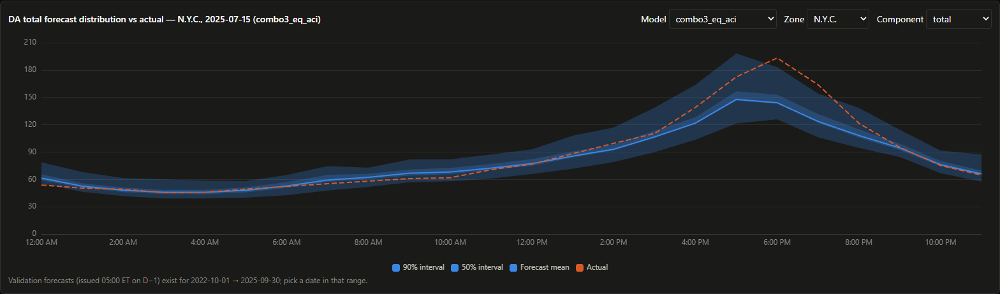

Power Markets
Five Years of New York Grid Data, One Probabilistic Price Forecast
A market-data warehouse feeds LEAR, LightGBM and structural congestion models, all scored under time-block cross-validation.

Electricity prices in New York move with load, weather and transmission congestion, and those forces change from one hour to the next. The nyiso-grid project collects five years of NYISO market data into a DuckDB warehouse. On top of it sit locational marginal price forecasts that give a full distribution instead of a single point estimate.
The models are a LEAR regression, LightGBM, and a structural congestion model, each tested on time-block cross-validation so that no future data leaks into training.
“A forecast that only gives one number can't tell you how wrong it might be.”
Overfitting diagnostics are part of the pipeline, not an afterthought. A dashboard is included, and the next phase is horizon-indexed price signals, with DART and FTR work to follow.
Python · DuckDB · LightGBM